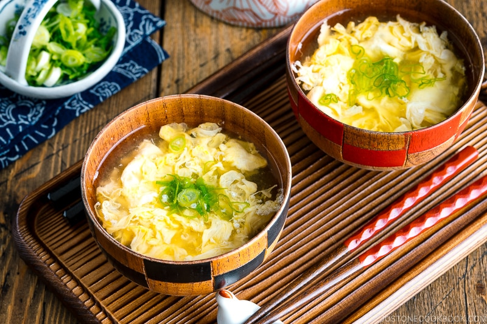

Japanese Egg Drop Soup (Kakitamajiru)

Japanese Egg Drop Soup, or Kakitamajiru, is a delicious and homey soup that will warm you right up!
Made with dashi broth and fluffy egg ribbons, it is everything you crave in a bowl of soup: delicate, flavorful, and restorative.
Ready in 15 minutes!
Information
- Prep Time: 5 minutes
- Cook Time: 10 minutes
- Total Time: 15 minutes
- Servings: 2
Ingredients
- 1 large egg (50 g each w/o shell)
- 2 tsp water
- 1 tsp potato starch or cornstarch
- 2 cups dashi
- 2 tsp sake
- ¼ tsp Diamond Crystal kosher salt (plus more, to taste)
- 1 tsp soy sauce
For the Broth
Instructions
- Gather all the ingredients.
I recommend making this dish right before you serve.
- Beat 1 large egg (50 g each w/o shell) in a bowl or measuring cup.
Cut 1 green onion/scallion into thin, round pieces.
- In a small bowl, mix together 2 tsp water and 1 tsp potato starch or cornstarch to make a slurry.
As the starch tends to sink to the bottom of the bowl, you will need to mix it again right before you use it.
- To a saucepan, add 2 cups dashi (Japanese soup stock),
2 tsp sake, and ¼ tsp Diamond Crystal kosher salt.
- Add 1 tsp soy sauce. Check the flavor and adjust with more salt, if needed.
Then, bring it to a simmer on medium heat.
When simmering, give the slurry mixture another whisk and add it to the dashi.
- Stir quickly to distribute the slurry into the dashi. Bring it to a simmer.
- Once simmering (small bubbles will appear around the edges), slowly pour a thin stream of the beaten egg into the soup in circular pattern,
starting from the center and spiraling outward (don‘t pour in the same area).
Place your cooking chopstick at the edge of the bowl/measuring cup so the egg will drizzle down the chopstick in a thin stream.
Let the egg sit for 20–25 seconds. Then, remove the saucepan from the heat to prevent overcooking.
To Serve
- Serve the soup in individual bowls and garnish with green onion. Enjoy!
Back To Home Page